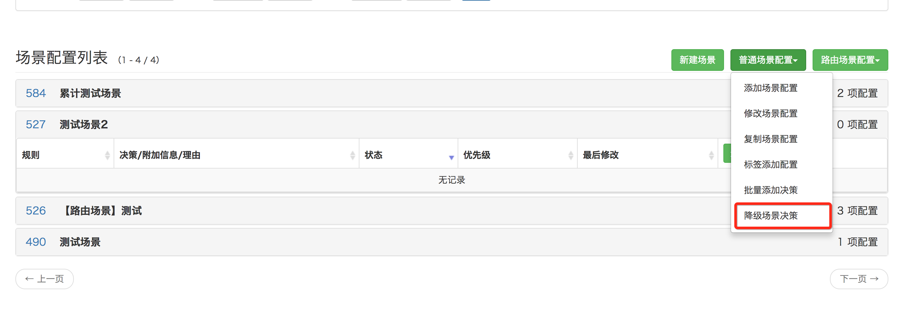
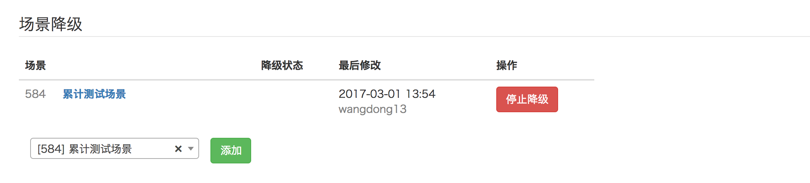
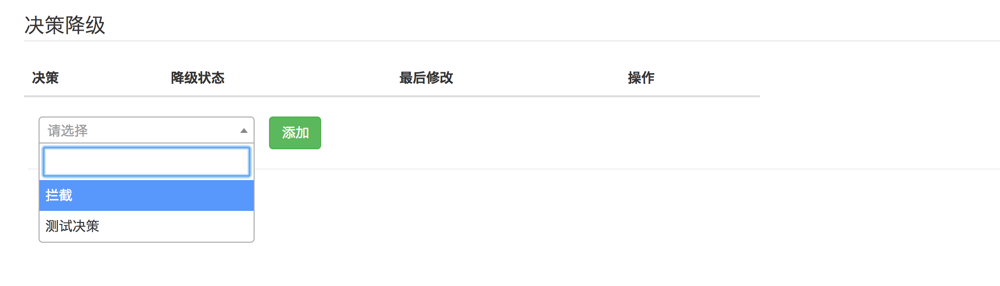
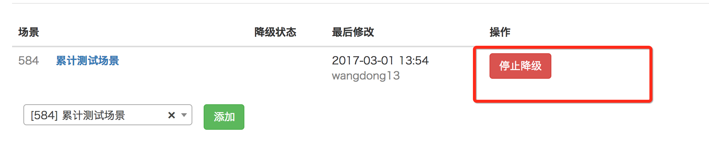

说明：业务降级操作文档
适用情况
1. 业务方（如tatooine）对某个决策的处理出现问题，希望Zeus暂停该决策的产生。
2.业务方对某个场景的处理出现问题，希望Zeus暂停执行该场景。
降级作用
如果场景或决策处于降级状态，那么对应的场景不再执行，对应的决策不再产生
操作手册
降级页面入口

场景和决策降级


停止降级

注：其它问题请联系 @王东 @江先锋 @肖慧云
保存日期：2026-11-17 · 查看学城原文
1. 业务方（如tatooine）对某个决策的处理出现问题，希望Zeus暂停该决策的产生。
2.业务方对某个场景的处理出现问题，希望Zeus暂停执行该场景。
如果场景或决策处于降级状态，那么对应的场景不再执行，对应的决策不再产生




注：其它问题请联系 @王东 @江先锋 @肖慧云